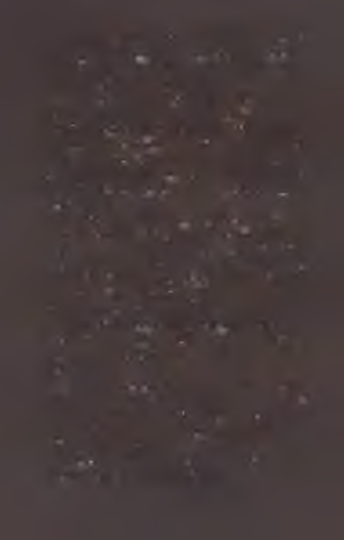

Bu kitabı satın almak istemeyebilirsiniz.
Biliyorum, bu bir yazarın söyleyeceği türde bir söz değil.
Satış departmanmdakiler bundan hoşlanmayacaklar. Editörüm küplere binecek. Ama henüz yolun başındayken size karşı dürüst olmayı yeğlerim.
Öncelikle, diğer kitaplarımı okumadıysanız işe buradan
başlamak istemezsiniz.
İlk iki kitabım Rüzgârın Adı ve Bilge Adamın Korkusu.
Yazdıklarımı merak ediyorsanız onlarla başlayın. Yarattığım
dünyaya en iyi giriş onlar. Bu kitap o serideki karakterlerden biri olan Auri’yi konu alıyor. O kitapların bağlamı olmadan büyük ihtimalle işin içinden çıkamazsınız.
İkincisi, diğer kitaplarımı okuduysanız bile bunun biraz
garip bir öykü olduğu konusunda sizi uyarmak boynumun
borcu. İpucu vermek istemem ama bunun... farklı oldu
ğunu söylesem sanırım yeter. Klasik bir öyküde olması gereken çoğu şey bunda yok. Ve eğer Kvothe’un öyküsünün devamını arıyorsanız onu burada bulamayacaksınız.
Öte yandan, Auri’yi daha yakından tanımak istiyorsanız bu kitabın size sunacağı çok şey var. Eğer sözcükleri, 11
gizemleri ve sırları seviyorsanız; eğer Şeyaltı’nı ve simyayı
merak ediyorsanız. Eğer dünyamın gizli köşeleri hakkında
daha çok şey bilmek istiyorsanız...
İşte o zaman bu kitap tam size göre demektir.
12
ş e y l e r in ç o k
AŞAĞILARDAKİ DİBİ
Auri uyandığında, yedi gününün kaldığını biliyordu.
Evet. Bundan oldukça emindi. 0 , yedinci günde ziyaretine gelecekti.
Uzun bir süreydi. Beklemek için uzun. Fakat yapılması
gereken her şeyi yapmak için değil. Eğer dikkatli olursa.
Eğer hazır olmak istiyorsa.
Auri gözlerini açınca loş bir ışığın fısıltısıyla karşılaştı. Kabuk’ta, yani en mahrem yerinde saklandığı için bu nadir bir olaydı. Demek ki bu aydınlık bir gündü. Yoğun
bir gün. Bir keşif günü. Göğsü heyecanla pırpır ederken
gülümsedi.
Parmakları yatak rafındaki damlalık şişesini bulduğunda, kolunun belli belirsiz şeklini görmesine yetecek kadar ışık vardı. Auri şişenin ağzını açtı ve Foxen’m tabağına tek
bir damla damlattı. Damla, tabağı kısa sürede güçsüz bir
mavi ışıkla aydınlattı.
15
Dikkatle hareket eden Auri, battaniyesini yere değmesin
diye itti. Yataktan çıktığında ayaklarının altındaki taş zemin
sıcaktı. Leğeni yatağının yakınındaki sehpada, en hoş kokulu sabunundan bir parçanın hemen yanında duruyordu.
Geceleyin hiçbirinde bir değişiklik olmamıştı. İşte bu iyiydi.
Auri, Foxen’m tam üstüne bir damla daha sıktı. Tereddüt
etti, ardından sırıtarak üçüncü damlanın düşmesine izin
verdi. Bir keşif gününde yarım yamalak iş yapmak olmazdı.
Ardından battaniyesini toparladı; çekip ona sarındı ve yere
sürtmesin diye battaniyeyi dikkatle çenesinin altına sıkıştırdı.
Foxen m ışığı dalgalanmaya devam etti. Işık önce belli
belirsiz bir kıpırtıdan ibaretti: bir leke, uzak bir yıldız. Sonra daha fazlası, bir ateşböceği kadar aydınlandı. Ama parlaklığı sabit kalmayıp arttıkça arttı, ışığıyla birlikte tepeden tırnağa titreşir hale gelene dek. Artık ışık, tabağında gururla
otururken bir sikkeden azıcık daha büyük, mavi-yeşil bir
kor parçasına benziyordu.
Foxen’m uykusu tamamen açılırken ve Kabuk’u en hakiki, en parlak mavi-beyaz ışığıyla doldururken Auri ona gülümsedi.
Genç kız bunun ardından etrafına bakındı. Kusursuz ya-
16
tağmı gördü. Tam boyuna göreydi. Santimi santimine. Sandalyesine göz attı. Sedir kutusuna. Minik gümüş kadehine.
Şömine boştu. Ve onun üstünde şömine rafı duruyordu;
raftaysa sarı yaprağı, taş kutusu, içinde hoş kokulu kurutulmuş lavanta bulunan gri cam kavanozu. Hiçbir şey başka bir şey değildi. Hiçbir şeyin olmaması gereken bir şey olmadığı gibi.
Kabuk’tan çıkmanın üç yolu vardı. Bir koridor, bir kapı
aralığı ve bir kapı. Bunlardan sonuncusu Auri için değildi.
Genç kız kapı aralığından Uğrak’a çıktı. Foxen, tabağında beklediği için ışığı burada daha loştu ama yine de görülebilecek kadar parlaktı. Uğrak son zamanlarda pek işlek olmamıştı; Auri buna rağmen her şeyi teker teker gözden
geçirdi. Şarap rafında, bir çiçeğin taçyaprağmdan daha kalın
olmayan bir porselen tabağın kırık yarısı duruyordu. Onun
altında deri ciltli bir oktavo kitap , bir çift tıpa ve ufacık bir
iplik yumağı mevcuttu. Bir yanda onun bembeyaz çay fincanı Auri’nin gıpta ettiği bir sabırla sahibini bekliyordu.
Duvar rafındaki bir tabakta sarı renkli bir reçine damlası
duruyordu. Siyah bir kaya. Gri bir taş. Düz, yassı bir tahta
parçası. Tüm bunların yanında, bağlama teli ağzı aç bir ku
şun gagası gibi açık duran ufacık bir şişe yer alıyordu.
Ortadaki masaya beyaz renkli, temiz bir bezin üstüne bir
avuç çobanpüskülü dutu bırakılmıştı. Auri dutları kısa bir
süreliğine süzdü, sonra onları kitap rafına, yani daha uygun
bir tüneğe götürdü. Odada etrafına bakınıp kendi kendine
kafa salladı. Her şey tamamdı.
Kabuk’a dönen genç kız yüzünü, elini ve ayağını yıkadı.
Geceliğini çıkarıp katladı ve sedir kutusuna kaldırdı. Kollarını kaldırarak ve parmak uçlarında yükselerek mutlulukla gerindi. *
* Sekiz yapraklık tabakalar halinde basılan kitap, -çn
17
Daha sonra ondan aldığı, en gözde elbisesini üstüne ge
çirdi. Elbise teninde hoş bir his yaratıyordu. Auri’nin ismi,
içinde bir ateş gibi yanıyordu. Bugün yoğun bir gün olacaktı.
s*®
Auri gidip Foxen’ı toparladı ve onu kapattığı avucunda ta
şıdı. Uğrak’tan geçerken duvardaki eğri bir çatlağı kullandı.
Çatlak geniş olmasa da genç kız o kadar ince yapılıydı ki
kırık taşlara sürtmemek için neredeyse omuzlarını çevirmesine bile gerek kalmayacaktı. Tam geçebileceği darlıkta olduğu söylenebilirdi.
Gam karolarla kaplı düz, beyaz duvarlara sahip yüksek
tavanlı bir odaydı. Genç kızın ayaklı aynası hariç yankıdan
yoksun bir yerdi. Fakat bugün içeride bir şey daha, günışığı-
nm belli belirsiz esintisi vardı. Işık, kemerli bir kapı aralığının doruğundan sızıyordu. Aralık molozlarla -kırık kalaslar, düşmüş taş bloklar- dolu olsa da orada, en tepede ufacık bir
ışık huzmesi mevcuttu.
Auri aynanın önünde durarak kıl fırçayı aynanın tahta
çerçevesinde asılı olduğu yerden aldı. Saçları bir bulut gibi
başının etrafında asılı kalana dek, onlardaki uyku düğümlerini taradı.
Bunun ardından elini Foxen’m üstüne kapattı ve onun
mavi-yeşil parıltısı olmadan oda kapkaranlık kesildi. Gözleri kocaman açılan Auri, arkasında kule gibi yükselen moloz yığınındaki silik ışık lekesi haricinde hiçbir şey seçemedi.
Altın sarısı rengindeki soluk ışık genç kızın yine aynı renkteki soluk saçlarına vurdu. Auri aynada kendi kendine sırıttı. Bu haliyle güneşe benziyordu.
Elini kaldırarak Foxen’ı tekrar açığa çıkardı ve hızla sekerek Bellik’in geniş labirentine doğru yola koyuldu. Düzgün biçimde kumaşla kaplanmış bir bakır boru bulmak dakika18
lık işti. Fakat mükemmel yeri bulm ak... Eh, asıl zor olan
oydu, değil mi? Auri boruyu neredeyse bir kilometre boyunca kırmızı tuğlalı tünellerde takip ederken elinin kayıp da birbirine dolanmış diğer sayısız borudan birine atlamaması
için dikkatli davrandı.
Sonra boru hiçbir uyarıda bulunmaksızın keskin bir dönüş yaptı ve kavisli duvara doğrudan dalarak Auri’yi terk etti. Kaba şey, ne olacak. Elbette borudan bol bir şey yoktu;
fakat ince tenekeden olanlar kaplamadan bütünüyle yoksundu. Cilalı çelikten yapılma buz gibi borular fazlasıyla yeniydi. Demir olanlar neredeyse mahcup edecek kadar hevesliydi ama hepsinin de kaplaması pamuktandı ve Auri’nin bugün böyle bir dertle uğraşacak hali yoktu.
O nedenle genç kız kafasına göre bir seyir izleyen tombul
seramik bir boruyu takip etti. Boru bir süre sonra toprağın
derinliklerine gömülüp gidiyordu fakat kıvrıldığı noktadaki
keten kaplaması bir yetimin gömleği kadar bol ve hırpani
bir halde sarkmış duruyordu. Auri gülümsedi ve yutmamaya özen göstererek kumaş parçasını nazik parmaklarla çözmeye koyuldu.
Kumaş en sonunda çözüldü. Mükemmeldi. Auri’nin kolu
uzunluğundaki tek parça incecik kumaşın rengi griye çalıyordu. Yorgun fakat istekliydi ve Auri onu ikiye katladıktan sonra dönüp yankılı Umbrel boyunca tabana kuvvet koşarak
On İki’ye kadar indi de indi.
On İki, Şeyaltı’ndaki eşine az rastlanır o değişken yerlerden biriydi. Kendini tanıyacak kadar akıllı, kendisi olacak kadar cesur ve her nasılsa hem benliğini koruyup hem de
kendini değiştirecek kadar yabaniydi. Bu açıdan neredeyse
eşsizdi; daima güvenli veya nazik olmamasına rağmen, Auri
ondan hoşlanmaktan kendini alamıyordu.
Kemerli yüksek boşluk bugün tam da genç kızın beklediği gibi parlak ve canlıydı. Günışığı çok yukarılardaki açık 19
mazgallardan girerek değişken mekânın derin, dar vadisine vuruyordu. Işık borulardan, destek kirişlerinden ve de kadim bir ahşap yolun sağlam ve düzgün hattından geçip,
ilerliyordu. Sokağın uzaklardan gelen sesi, şeylerin çok aşa
ğılardaki dibine kadar ulaşıyordu.
Auri parke taşlarının üzerinde tıkırdayan toynakların, bir
parmak eklemi kadar keskin ve yuvarlak sesini duydu. Kulağına oradan geçen bir at arabasının uzak gümbürtüsü ve birbirine karışan konuşmaların boğuk uğultusu çalındı. Tüm
bunların arasına belli ki meme isteyen ama bulamayan bir bebeğin tiz, öfkeli çığlıkları karışıyordu.
Sarı On îki’nin dibinde cam kadar düzgün bir suyla dolu
oldukça derin bir havuz vardı. Yukarıdan gelen günışığı,
Auri’nin su altındaki boru keşmekeşlerinin İkincisini görmesine imkân tanıyacak kadar parlaktı.
Genç kız burada hasır bulunduruyordu ve duvarların birinde boylu boyunca uzanan dar bir taş rafta, üç adet şişe bekliyordu. Fakat Auri onlara bakarken kaşlarını çattı. Şişelerden biri yeşil, diğeri kahverengiydi; sonuncusu ise şeffaftı. Birinin
ağzı geniş bir tel yumağıyla, diğerininki gri renkli, döndürülerek açılan bir kapakla, sonuncusununkiyse yumruk kadar kaim bir tıpayla kapatılmıştı. Hepsi de farklı şekillerde ve
ebatlarda olmasına rağmen hiçbiri dört dörtlük değildi.
Canı burnuna gelen Auri ellerini öfkeyle havaya kaldırdı.
Çıplak ayakları taşları tokatlarken, Kabuk’a kadar geri
koştu. Oraya vardığı zaman da içinde lavanta bulunan gri cam
şişeye baktı. Şişeyi aldı, dikkatle gözden geçirdi, uygun yerine
bıraktıktan sonra yine koşarak oradan ayrıldı.
Auri bu sefer duvardaki çatlak yerine eğri kapı aralığını
kullanarak Uğrak’a ilerledi. Söğütlük’ün dolambaçlı yokuşlarını çıkarken Foxen, duvarlara oynak gölgeler düşürdü. Auri koştururken saçları bir sancak gibi peşi sıra dalgalanıyordu.
20

Siyahev’deki spiral merdivenden döne döne indi. Nihayet akan suyun şırıltısı ve cam çınlamalarını duyduğunda Çınıltı’nm eşiğinden geçtiğini anladı. Az sonra Foxen’ın ışı
ğı, spiral merdivenin dibini yutmuş karanlık sularla dolu
çalkantılı göletten yansıdı.
Buradaki sığ bir nişte iki adet şişe duruyordu. Biri mavi ve
dar, diğeri ise yeşil ve bodurdu. Auri başını yana eğip bir gözünü kapadı, ardından iki parmağını uzatarak yeşil olana dokundu. Sırıtarak şişeyi kaptı ve merdiveni koşarak tırmandı.
Geri giderken değişiklik olsun diye Tonozlar’dan geçti.
Koridor boyunca koşarken çatlak zemindeki ilk derin yarığın
üstünden bir dansçı kıvraklığıyla atladı. İkinci yarığı aşmak
için bir kuş hafifliğiyle sıçradı. Üçüncüsüne gelince güneşe
benzeyen hoş bir kız kadar çılgınca zıpladı.
Sarı On tki’ye vardığında nefes nefeseydi. Soluklanırken
Foxen’ı yeşil şişeye soktu, hasırı kullanarak onu dikkatle yas-
tıkladı ve mandalı kauçuk contaya oturtarak şişenin ağzını
sıkıca kapattı. Onu yüzüne doğru tuttu, sonra da sırıtarak
öptüğü şişeyi dikkatle göletin kenarına koydu.
Auri en sevdiği elbisesini çıkarıp parlak bir pirinç boruya
astı. Sırıtırken karnında tedirgin bir balık yüzüyormuşçasına
titredi. Ardından çırılçıplak dikilerek havada uçuşan saçlarını
her iki elinde topladı, geriye tarayıp doladı ve gri renkli eski
bir keten bez parçasıyla bağladı. İşi bittiğinde saçları upuzun
bir kuyruk halinde beline kadar iniyordu.
Genç kız kollarını göğsüne bastırarak iki ufak adım attı
ve göletin yanında durdu. Önce ayak parmaklarından birini,
sonra da tüm ayağını suya daldırdı. Nane şekeri kadar ferahlatıcı ve tatlı bir hisse kapıldı. Ardından eğilerek her iki bacağını da suyun içine sallandırdı. Kısa bir süreliğine dengede kalarak iki eliyle birden çıplak vücudunu göletin soğuk taş
kenarından ayrı tuttu.
22
Fakat bundan sonsuza kadar kaçmmazdı. O nedenle
Auri kendini kasarak tamamen çöktü. Taşın soğuk kenarının nane şekerine benzer bir tarafı yoktu. Genç kızın hassas alt yarısını donuk, hissiz bir sızı sardı.
Auri işte o zaman arkasına döndü ve suya girmeye koyuldu. Yavaş hareket etti ve küçük taş çıkıntıyı bulana dek etrafını ayaklarıyla yokladı. Ayak parmaklarını taşın üstüne
kıvırarak kendini kalçalarına kadar gelen suda sabit tuttu.
Sonra birkaç derin nefes aldı, gözlerini sımsıkı kapayıp dişlerini sıktı ve ayak parmaklarını gevşeterek kasıklarını yüzeyin altına batırdı. Hafifçe inledikten sonra bedenindeki tüm tüyler diken diken oldu.
işin en kötü tarafı geride kalınca gözlerini yumdu ve ba
şını da suya soktu. Çıktığında nefes nefeseydi ve su kaçan
gözlerini kırpıştırarak ovaladı. Sonra bir kolu göğüslerinin
üstünü kapatmış haldeyken, baştan aşağı büyük bir ürpertiye kapıldı. Fakat ürperti geçtiğinde suratındaki buruşuklu
ğun yerini bir sırıtış almıştı.
Auri saçları başının üzerinde bir hale gibi kabarık olmadığında kendini küçük hissediyordu. Her gün olmak için çabaladığı türden bir küçüklük değildi hissettiği. Ağaçlar
arasındaki bir ağacın küçüklüğü de değildi, yer altındaki
bir gölgenin küçüklüğü de. Üstelik küçük hissettiği tek şey
bedeni değildi. Fazla etli butlu olmadığının farkındaydı.
Ayaklı aynasına bakmayı akıl ettiği zamanlarda gördüğü
kız, sokaklarda dilenen bir yetim kadar ufaktı. Gördüğü
kız inceden de inceydi. Elmacık kemikleri çıkık ve narindi.
Köprücük kemikleri ise teninden dışarı fırlayacak gibiydi.
Fakat hayır. Saçları arkada toplandığında ve ıslanarak
sarktığında Auri kendini daha... az hissediyordu. Bastırılmış gibi. Daha solgun. Soğuk. Soluk. Silik. Mükemmel ke23
ten bez parçası olmasaydı durum tümüyle tatsızlaşırdı. O
olmasaydı Auri kendini yalnızca kısacık kalmış bir fitil gibi
hissetmekle kalmaz, bir hiç olur çıkardı. İşleri doğru düzgün halletmek için buna değerdi.
Titremeleri nihayet son buldu. Karnında hâlâ bir balık
yüzse de gülümsemesi hevesliydi. Yukarıdan sızan altın sarısı günışığı bir mızrak kadar düz, parlak ve sabit bir şekilde gölete vuruyordu.
Auri derin bir nefes aldı, sonra nefesini vererek ayak
parmaklarını oynattı. Bir nefes daha alıp bu seferkini daha
yavaş bıraktı.
Sonra üçüncü bir tane. Genç kız Foxen’m şişesinin boynunu bir eliyle kavradı, şişeyi göletin taş kenarına bıraktı ve suya daldı.
s*®
Işığın açısı mükemmeldi ve Auri ilk boru keşmekeşini apa
çık gördü. Bir golyan balığının süratiyle döndü ve borulardan hiçbirinin kendisine dokunmasına izin vermeyerek aralarından rahatça süzüldü.
Onun altında ikinci boru düğümü yer alıyordu. Auri
daha fazla dalmamak için ayağıyla eski bir demir boruyu
itti, sonra da yanında bulunan bir vanaya boştaki eliyle asılarak hızını değiştirdi ve bilek kalınlığındaki iki bakır borunun arasındaki dar boşluktan geçti.
Genç kız derinlere daldıkça mızrağımsı ışık kayboldu ve
geriye sadece Foxen’ın mavi-yeşil parıltısı kaldı. Fakat etrafını saran hasırdan, sudan ve kalın yeşil camdan geçen ışığı burada daha boğuktu. Auri ağzını mükemmel bir yuvarlak
yapıp çabucak iki hava kabarcığı bulutu püskürttü. O derinlere indikçe basınç artıyor, karanlıktaki loş suretler üstüne üstüne geliyordu. Bu suretler; eski bir yol, eğik bir kaya 24
tabakası, yosun kaplı kadim bir tahta kirişten oluşuyordu.
İleri uzanmış parmakları suyun dibini gözlerinden önce
buldu ve Auri düzgün taş zeminin kısmen görebildiği yüzeyinde elini gezdirdi. Bir ileri bir geri. Bir ileri bir geri. Hızla ama dikkatlice. Bazen burada keskin şeyler olurdu.
Sonra parmakları uzun ve düzgün bir şeyin üstüne kapandı. Bir değnek miydi? Auri onu kolunun altına sıkıştırdı ve kendini uzaktaki ışığa doğru yükselmeye bıraktı. Tanıdık boruları bulan boştaki eli borulara asılıp kendini yönlendirerek, genç kızı bulanık suretlerden oluşan labirentten geçirdi. Akciğerleri biraz sızlamaya başlayan Auri yükselirken yine bir hava kabarcığı bulutunu ağzından bıraktı.
Yüzü gölet kenarının yakınında yüzeye çıktı ve o altın
sarısı ışıkla aşağıdayken bulduğu şeyi nihayet gördü: beyaz
renkli etsiz bir kemik. Uzundu, ama bir bacak değildi. Bir
koldu. Bir prima aksiyal. Genç kız parmaklarını kemiğin
üstünde boylu boyunca dolaştırdı ve bir halka gibi onu çepeçevre saran incecik bir kaynama noktasına rastladı. Demek ki çok önce kırılıp iyileşmişti. Kemik hoş gölgelerle doluydu.
Gülümseyen Auri onu bir kenara koydu. Sonra üç kez
yavaş ve derin nefes aldı, Foxen’ı sıkıca kavradı ve tekrar
gölete daldı.
Bu sefer ikinci düğümde ayağı iki borunun arasına sıkıştı. Şanssızlık işte. Kaşlarını çatan genç kız ayağına asıldı ve kısa süre sonra onu çekip kurtarmayı başardı. Ciğerlerindeki havanın yarısını bıraktı ve bacaklarım sertçe çırparak bir taş gibi aşağılardaki karanlığa kendini bıraktı.
Kötü başlangıca rağmen bu seferki kolay bir keşif oldu.
Parmakları daha dibe bile değmeden bir o-veya-bu yuma
ğına rastladı. Bulduğu şeyin ne olabileceğine dair en ufak
bir fikri yoktu. Birbirine dolanmış metal, kaygan ve sert bir
25
şeydi. Auri onu göğsüne yasladı ve tekrar yükselmeye koyuldu.
Bu sefer parçalarından birini kaybetmekten çekindiği
için, bulduğu şeyi kolunun altına alamadı. Öyle yapmaktansa Foxen’ın şişesini koltukaltına sıkıştırdı ve sol eliyle kendini yukarı çekti. Yöntemi güzel ve dengeliydi. Auri
hava kabarcıklarının geri kalanını salma gereği bile duymadan yüzeye vardı.
Yumağı göletin kenarında açarak yaydı. Gördüğü şeyler,
kömür kadar kararmış gümüş bir tokası olan eski bir kemer,
şaşkına dönmüş bir salyangozun tutunduğu yapraklı bir dal
ve son olarak dal parçasına dolanmış çürük bir sicime bağlı,
genç kızın işaret parmağı uzunluğunda ince bir anahtardı.
Auri salyangozu öpüp ondan özür diledikten sonra dalı
ait olduğu yere, yani suya geri bıraktı. Kemerin derisi kendi
içine kıvrılmıştı ama toka ufacık bir çekişle ayrıldı. Böylesi
her iki parçanın da hayrınaydı.
Göletin taş kenarına tutunan Auri artık omuzlarını ve
göğsünü saran minicik dalgalar halinde titriyordu. Dudakları pembeliğini yitirip maviye çalan soluk bir pembe tonuna dönmüştü.
Genç kız Foxen’ın şişesini aldı ve şişenin ağzının gevşemediğinden emin oldu. Başını eğerek suya baktığında karnındaki balık heyecanla yüzdü. Üçüncü dalış, şanslı olandı.
Derin bir nefes alan Auri vücudunu düzgünce bükerek
tekrar daldı. Sağ eli tüm dostane tutamakları buluyordu.
Karanlığa indikçe indi. Taşlar... Tahtalar... Sonrasında
ise, ileri uzanmış eliğini soluk mavi-yeşil renge boyayan
Foxen’ın loş ışığı hariç hiçbir şey... Eli bu haliyle bir su
perisininkinin olması gerektiği gibi gözüküyordu.
Parmak eklemleri dibe sürtünce yönünü ayarlamak için
biraz döndü. Bacaklarını çırparak ve kolunu savurarak gö-
26
letin siyah taş dibi boyunca süzüldü. Sonra gözüne bir parıltı ilişti. Parmakları keskin ve düzgün hatlara sahip, sert ve soğuk bir şeye çarptı. Bulduğu nesne sevgiyle ve cevaplarla doluydu; öyle ki Auri en ufak bir dokunuşta onların dışarı taştığını hissedebiliyordu.
Genç kız on kalp atışlık bir süre boyunca bulduğu şeyin taşa yapışık olduğunu düşündü. Sonra nesne kaydı ve Auri gerçeği anladı. Bulduğu şey oldukça ağırdı. Uzun,
kaygan bir ânın ardından ufacık parmakları onu kaldırmanın bir yolunu buldu. Yekpare metal nesne bir kitap kadar kalındı. Tuhaf bir şekli vardı ve bir külçe saf iridyum kadar
yoğundu.
Auri onu göğsüne götürdüğünde kenarlarının tenine
battığını hissetti. Sonra dizlerini büküp yüzeyin uzak parıltısına baktı ve iki ayağını birden dibe dayayıp kendini sertçe yukarı itti.
Bacaklarını çırptı da çırptı; fakat sanki yerinden hiç kıpırdamadı. Metal şey ağırlık yaparak onu aşağı çekiyordu.
Ayağı kalın bir demir boruya sertçe çarptı. Genç kız fırsattan yararlanarak oradan destek aldı ve kendini tekrar itti.
Hissettiği âni ivme, ayağı demir borudan ayrılır ayrılmaz
yavaşladı.
Ciğerleri artık ona karşı koyuyordu. Yarısı dolu aptal
şeyler daha çok hava istiyordu. Genç kız ağız dolusu hava
kabarcığı salarak onları kandırmaya çalıştı. Aslında yitirdi
ği her kabarcığın kendisini daha da ağırlaştıracağının, hatta
daha en alt boru keşmekeşinin yakınında bile olmadığının
farkındaydı.
Auri tutunarak kendini çekebilmek için metal şeyi koltukaltına kıstırmaya kalkıştı. Fakat bunu denediğinde pü27
rüzsüz nesne parmaklan arasında biraz kaydı. Auri o panikle çırpındı, bocaladı ve Foxen’m şişesi görünmeyen bir surete çarptı. Foxen genç kızın elinden kurtuldu.
Auri boştaki eliyle atıldı fakat parmakları Foxen’a vurarak onu daha da uzaklaştırmaktan başka işe yaramadı. Kız bir anlığına donakaldı. Metali bırakmak seçenek dışıydı.
Fakat F o xen ... Ezelden beri onunla beraber olagelm işti...
Genç kız Foxen’m şişesinin bir anafora yakalanıp savrulmasını ve yamuk bir bakır boru üçlüsünün arkasında erişim mesafesinden çıkmasını seyretti. Ciğerleri artık öfkeliydi. Auri dişlerini sıktı ve boşta kalan eliyle yakındaki taş bir çıkıntıya tutunarak kendini yukarı çekti.
Ciğerleri artık içinde kabarıyordu; o yüzden Auri daha
en alçaktaki keşmekeşi bile seçememesine rağmen kabarcıklarını yavaşça bıraktı. Foxen olmadan su karanlıktı ama en azından hareket halindeydi. Sarsakça yaptığı âni
asılmalarla kendini yüzeye doğru çekiyor, ne kadar tuhaf
olursa olsun bulabildiği her tutamağı kullanıyordu. Bacaklarını çırpmasına rağmen bu davranışı ona çok az şey kazandırıyordu. Sıkı sıkıya göğsüne bastırdığı keskin ve
sert sevgi topağı ona ağırlık yapıyordu. Acaba nesneyi bu
denli ağırlaştıran içinde barındırdığı cevaplar mıydı?
Auri nihayet kendini en alçaktaki boru kümesine kadar
çekebildi. Fakat ciğerleri artık boştu ve vücudu kurşun gibiydi. Normalde bir balık misali eğrilip bükülerek boru keşmekeşinin içinden rahatça sıyrılırdı. Ama şimdi ağır
ve soluksuzdu. Tek eliyle boruları yoklayarak ve onlara
asılarak boruların arasından geçti. O sırada dizini çarptı
ve telaşa kapılarak sırtını pas tutmuş keskin bir şeye boylu boyunca sürttü. Bir kolunu uzattı fakat kendisine öyle ağırdı ki parmakları alışılageldik tutamağına değmedi bile.
28

Bacaklarını çırparak birkaç santim daha kazandı. Sonra dikkatle bağlamış olmasına rağmen saçı bir şeye dolandı. Aniden sarsılarak duran genç kızın kafası geriye savruldu ve vücudu suda yan döndü.
Neredeyse derhal batmaya başladığını hisseden Auri
telaşla çırpındı. Kaval kemiği bir boruya çarparak tüm
benliğinin acıyla sızlamasına sebep oldu. Fakat genç kız
çarptığı yeri diğer ayağıyla çabucak buldu, oradan destek
aldı ve kendini sertçe itti. Bir mantar tıpa gibi yükselirken
saçlarının dolandığı kaba şeyden kurtulacak kadar hızlıydı. Yine de bu sert asılış kafasını geriye çekerek ağzını açılmaya zorladı.
Auri işte o zaman boğulmaya başladı. Su dolu ağzıyla
öksürdü ve tıkandı. Fakat su burnuna ve boğazına kaçarken bile genç kızın en çok korktuğu şey elinin açılıp, ağır metal nesnenin parmaklarından kayıp karanlığa düşme
ihtimaliydi. F oxen ’ı kaybetm ek yeterince kötüydü. Bu
durum Auri’yi karanlıkta kör ve yalnız bırakacaktı. Boruların altında kısılı kalm ak ve boğularak canından olmak da berbattı. Fakat o şeylerin ikisine de yan lış denemezdi.
Metalin karanlığa kayıp gitmesine göz yummak olacak iş
değildi. Düşünülemezdi. Bu o kadar akıl almazdı ki kızı
dehşete düşürüyordu.
Artık açık olan saçları bir duman bulutu gibi başının
etrafında dönüyordu. Eli bir borunun huzur verici, tanıdık kıvrımına tutundu. Auri kendini yukarı çekti, sonra da uzandı ve tutunacak başka bir yer buldu. Dişlerini sıktı, öksürdü, kendini yukarı itti ve tutundu.
Yüzeye çıktığında ağzından su püskürterek soluklandı, sonra tekrar suyun altına kaydı.
30
Bir saniye sonra elini pençe gibi kullanarak bir kez
daha yükseldi. Boştaki eli bu sefer göletin taş kenarını
yakaladı.
Auri’nin sudan çıkardığı şey bir çanın sesiyle taş zemine çarptı. Tabak kadar büyük olan nesne parlak bir pirinç çarktı. Karşılaştırm ak gerekirse, kalınlığının genç
kızın başparmağından eksiği yok, fazlası vardı. Ortasında bir deliğe, dokuz adet dişe ve onuncunun uzun zaman önce koptuğu yerde çentikli bir boşluğa sahipti.
Çark gerçek cevaplarla, sevgiyle ve ocakışığıyla doluydu. Çok güzeldi.
Auri gülümseyerek yarım mide dolusu suyu taşlara
kustu. Sonra tekrar kustu ama bu kez, sular parlak pirinç çarka sıçram asın diye başını çevirdi. Bunun ardından öksürdü, ağzını suyla doldurdu ve gölete geri tükürdü. Pirinç
çark Sarı On İki’nin soğuk taşlarında bir yürek kadar ağır duruyordu. Yukarıdan gelen ışık, çarkın yüzeyini par-
lak bir altın sarısına bürüyordu. Sanki Auri, güneşin bir
parçasını derinlerden yüzeye çıkarmış.
Tekrar öksüren Auri ürperdi. Elini uzatıp bir parm a
ğını çarka değdirdi. Ona bakarken gülümsedi. Dudakları
mosmordu. Titredi. Kalbi neşe doluydu.
Auri sudan çıktıktan sonra On Iki’nin dibindeki gölete
bakındı. Boş yere uğraştığını bilse de F oxen ’i yüzeyde
tembel tem bel yüzerken görmeyi umuyordu.
H içbir şeyle karşılaşmadı.
O zaman yüzü asıldı. Suya geri dönmeyi düşündü.
Fakat hayır. Sadece Üç defa. İşler böyle yürürdü. Yine
de F oxen ’i karanlıkta bırakm anın düşüncesi, ta yüreğine
kadar inen incecik bir çatlak açmak için yeterliydi. Bunca zaman sonra onu kaybetm ek...
Sonra Auri’nin gözüne yüzeyin çok altındaki bir şey
takıldı. Bir ışıltı. Bir parıltı. Kız sırıttı. Foxen birbirine
dolanmış borulara çarpa çarpa yavaşça yükselirken k o caman, tom bul bir ateşböceğinden farksızdı.
Auri beş uzun dakika bekleyerek F oxen ’m şişesinin
sallana sallana yükselm esini, sonunda da bir ördek gibi
yüzeye çıkm asını seyretti. Bunun ardından şişeyi kapıp
öptü. Onu bağrına bastı. Evet, işte bu. İşleri usulüne uygun halletm ek her şeye değerdi.
Her şey sırayla. Auri öncelikle F oxen ’i şişeden çıkardı
32
ve şişeyi duvardaki diğerlerinin yanma bıraktı. Sonra
Ç ın ıltı’ya indi ve oradaki çalkantılı sularda durulandı.
Cinnas meyvesi ve yaz kokan bir kalıp sabunun incecik
kalıntısıyla kendini bir güzel yıkadı.
Saçlarını sabunladıktan, fırçaladıktan ve tem izledikten sonra son bir kez durulanmak için Ç ın ıltı’nm uçsuz bucaksız karanlık sularına daldı. Yüzeyin altındayken
bacağına bir şey sürtündü. Kaygan ve ağır bir şey hareketli ağırlığını genç kızın bacağına bastırdı. Bu durum Auri’yi rahatsız etmedi. Bacağına değen her ne ise, tıpkı
Auri gibi kendine uygun yerdeydi. Her şey tam da olması
gerektiği gibiydi.
Tertemiz olan ve saçlarını sıkarak kurutan Auri oradan
ayrılırken O nluklar’dan geçti. Bunun en hızlı yol oldu
ğu söylenemezdi ama o pespembe haliyle Bozluklar’dan
geçm ek yakışık almazdı. Daha uzun yoldan gitm esine
rağmen bir köşeyi dönüp Fırm lar’a çıkm ası uzun sürmedi. Islak ayakları taşları tokatlarken, genç kız F oxen ’ı yakındaki çıkık bir tuğlanın üstüne bıraktı, zira dostu
fazla ısıdan hoşlanmazdı.
Tünel duvarı boyunca uzanan kaim çelik borular bugün yakınlarında durulmayacak kadar sıcaktı ve hem duvarlar hem de zem in, ısıdan çıtır çıtır edene kadar
kavrulmuştu. Auri çıplaklığının herhangi bir parçası, b o rulardan fışkıran sessiz kızıl kükrem e tarafından kızarm asın diye yavaşça kendi ekseninde döndü. Bulunduğu yerin tenini kurutm ası, in cecik saçlarını havalandırması
ve buz kesm iş kem iklerindeki ürpertileri pişirm esi yalnızca saniyeler sürdü.
33
Bunun ardından Sarı On İki’den en gözde elbisesini
aldı. Giysiyi başından aşağı geçirdi ve tüm hâzinelerini
Uğrak’a götürüp merkezi masanın üstünde sıraya dizdi.
Deri kemere göze tuhaf gelen kıvrımlı desenler işlenmişti. Koca pirinç çark baştan aşağı pırıl pırıldı. Anahtar simsiyahtı. Kemer tokası ise siyah olmasına rağmen, altı parlaktı.
Orada gizli bir şey vardı.
Acaba kemer onun için olabilir miydi? İşte bu böyle bir
güne başlamanın güzel bir yoluydu. Onun ziyaretine sadece
birkaç gün kala hediyesini böyle erkenden hazır edip o işi
aradan çıkarmak hoş olurdu.
Auri kemer tokasım alıcı gözle süzdü. Bu ona uygun bir
hediye miydi? Ne de olsa o sağı solu belli olmayan biriydi.
Üstüne üstlük saklı çok şeyi vardı. Kafa sallayan genç kız
koyu renkli soğuk metale dokunmak için uzandı.
Fakat hayır. Toka ona yakışmazdı. Auri’nin bunu daha
en başından bilmesi gerekirdi. O sabitlenmeye gelmezdi.
Kapatılmaya da. Üstelik koyu da değildi. Ah, olamaz. O
korumsuydu. Kıpkızıldı. Bakırla yaldızlanmış altın benzeri
parlaklığının altı daha da parlaktı.
Çarkın değerlendirilmesi lazımdı. Neredeyse ona uygun
gibi gözüküyordu ama o işin acelesi yoktu. Acilen ilgilenil-
mesi gereken şey anahtardı. Aralarında en tez canlısı apaçık
oydu. Üstelik bu zerre kadar bir şaşırtıcı değildi. Anahtarlar
rehavetleriyle pek tanınmazdı ve bu seferki neredeyse bir
kilit için uluyacaktı. Auri onu alıp ellerinde çevirdi. Bir kapı
anahtarı. Anahtarın bu gerçeği itiraf etmekte hiçbir çekincesi yoktu.
Siyah anahtar. Beyaz gün. Auri başını yana yatırdı. Şeylerin şekli doğruydu. Bu bir bulma günüydü ve hiç şüphe yok ki zavallı şey fena halde ilgiye muhtaçtı. Genç kız kendi'
kendine kafa salladı ve anahtarı elbisesinin cebine koydu.
35
Yine de oradan ayrılmadan önce her şeyin uygun yerine geçmesine yardımcı oldu. Kemer tabii ki ortadaki masada kaldı. Toka reçine tabağının yanma taşındı. Kemik âdeta edepsizce çobanpüskülü dutunun yanma sokuldu.
Çark bu açıdan meşakkatliydi. Auri onu kitap rafına koydu, sonra köşedeki sehpaya taşıdı. Kayıp dişinin boşluğu dosdoğru yukarı bakan çark, duvara dayalı kaldı. Auri kaşlarını çattı. Uygun yer orası değildi.
Genç kız anahtarı çıkarıp çarkın önünde tuttu. Siyah ve
pirinç. İkisi de döndürülmek için. Toplamda on iki diş...
Auri başını iki yana sallayıp iç geçirdi. Anahtarı tekrar cebine koyup koca pirinç çarkı kitap rafında bıraktı. Aslında ona uygun yer orası değildi ama Auri’nin elinden şimdilik bu
kadarı geliyordu.
En yakın yer Bucak’tı; o yüzden Auri aceleyle o tarafa yöneldi ve kapılarından ilkine gelene kadar başını eğerek alçak taş kapı aralıklarından geçti. Geldiğinde de biraz soluklanıp
Foxen’ı avucuna aldı ve üstüne hafifçe üfleyerek ışığını körükledi. Tahta kapı devasaydı ve zaman içinde rengi griye dönmüştü. Menteşeleri pul pul dökülen pas yığınlar topluluğuydu.
Genç kız anahtarı cebinden çıkarıp önünde, kendisi ile
dev gri kapının arasında tuttu. Bakışları ikisinin arasında gidip geldi, sonra arkasını dönüp, tez adımlarla oradan uzaklaştı. Üç kez sola döndükten ve kırık bir pencereden geçtikten sonra ikinci kapıya vardı. O da eski ve griydi ama ilkinden
daha büyüktü. Auri’nin gerçeği anlamak için onlara şöyle bir
göz atması yetti. Burada bir yanlışlık vardı. Bunlar uygun kapılar değildi. Peki neresi? Onluklar mı? Kara Kapı mı?
Genç kızı bir ürperti aldı. Kara Kapı olamazdı. Beyaz bir
günde değil. Öyleyse Yüklük. Ya da Onluk. Hattâ Dipiçi. Bu
36
Kara Kapı’ya göre bir anahtar değildi. Olamazdı.
Auri aceleyle Bellik’ten geçerken iki kere sola, hatırı kalmasın diye de iki kere sağa döndü. Ayrıca kimseyi gücendirmemek için borulardan hiçbirini çok uzun süre takip etmedi. Onun ardından dolambaçlı yollarıyla ve kükürdü andıran kokusuyla Yamucak geldi. Auri oranın yıkık dökük duvarları
arasında biraz yolunu kaybetse de sonunda Ufalanık’a, yani
bir deliğe benzeyecek kadar dik olan dar bir toprak tünele
çıkmayı başardı. Genç kız birbirine tutturulmuş çomaklardan oluşan uzun bir merdiveni kullanarak aşağı indi.
Merdivenin dibi zımparalanmış taştan, ufak, derli toplu
bir odada son buluyordu. İçerisi bir gömme dolaptan daha
büyük olmayıp pirinç şeritli eski bir meşe kapının haricinde boştu. Auri ellerini silkeledi, kapıyı açtı ve hafif adımlarla Yüklük’e çıktı.
Koridor bir at arabasının sığabileceği kadar genişti. Öylesine yüksek tavanlı ve uzundu ki Foxen’m ışığı karşı ucu tıkayan moloz yığınına güçlükle ulaşıyordu. Mavi-beyaz ışık
yukarıda kristal bir avizeye çarpıp dağılıyordu.
Duvarların alt kısımları koyu renkli ahşap panelliydi ama
onların üstünde yer alan bölümlerde gösterişli alçı kaplamalar vardı. Tavan geniş fresklerle süslenmişti. Tüller içindeki kadınlar sağda solda aylaklık ediyorlar, fısıldaşarak birbirlerine yağ sürüyorlardı. Erkeklerse suda gülüp eğleniyorlar, çıplak halleriyle epey gülünç gözüküyorlardı.
Auri her zaman yaptığı gibi hınzırca sırıtarak resimlere
bakmaya biraz zaman ayırdı. Minicik ayaklarının altındaki
cilalı mermer zemin soğuk olduğu için, ağırlığını bir bacağından diğerine aktarmayı ihmal etmedi.
Yüklük’ün her iki ucu da devrilmiş kayalar ve toprakla
tıkalı olsa da ortası bir pota kadar temizdi. Her şey alabildiğine kuru ve düzenliydi. Ne rutubet, ne küf, ne de toz getiren esintiler vardı. Çıplak adamlar olsun veya olmasın usturup-37

lu bir mekândı; o yüzden Auri adaba tümüyle riayet etmeye
özen gösterdi.
Koridor boyunca on iki meşe kapı sıralıydı. Hepsi de şık,
düzgün ve pirinç şeritliydi. Şeyaltı’nda geçirdiği uzun yıllarda
Auri’nin, içlerinden sadece üçünü açmışlığı vardı.
Genç kız havada tuttuğu elinde parlak bir ışık saçan
Foxen’la beraber koridorda ilerledi. Bir düzine adımın ardından gözüne mermer zemindeki bir parıltı takıldı. Sekerek yaklaşınca avizeden düşmüş bir kristalin yerde sapasağlam
durduğunu gördü. Belli ki şanslı ve cesur bir kristaldi. Auri
onu eline aldı ve anahtarın bulunmadığı cebine soktu. İkisi
bir araya gelirse yaygara çıkarmaktan başka bir şey yapmazlardı.
Üçüncü kapı da uygun değildi, yedinci de. Auri dokuzuncu kapıyı gözüne kestirdiğinde daha şimdiden Dipiçi’ne inmekte kullanacağı güzergâhı planlıyordu. Kapı onu bekliyordu. Hevesle. Kapı kolu döndü ve kapı sessiz menteşeler üzerinde kolayca açıldı.
içeri giren Auri cebindeki anahtarı çıkarıp öptü, sonra da
onu kapının hemen arkasındaki boş bir masaya dikkatle bıraktı. Anahtarın tahtaya değerken çıkardığı küçük tıkırtı genç kızın yüreğini ısıttı. Anahtarı orada, ona en uygun yerde rahatça otururken görmek Auri’yi gülümsetti.
Bulunduğu yer bir oturma odasıydı. Pek güzeldi. Genç kız
Foxen’ı bir duvar apliğinin içine koydu ve dikkatle etrafa bakındı. Yüksek bir kadife koltuk. Alçak bir tahta masa. Kabarık bir halının üstünde kabarık bir koltuk. Köşede birbirinden
vakur bardaklarla ve şişelerle dolu ufacık bir servis arabası.
Odada bir yanlışlık vardı. Göze batan bir şey değil. Otur Kalk veya Surat-
maz’daki gibi hiç değil. Hayır. Burası iyi
bir yerdi. Hemen hemen mükemmel bir
38
yer. Her şey kusursuza yakındı. Bu her şeyin usulüne uygun
yapıldığı beyaz bir gün olmasaydı Auri ortada bir hata oldu
ğunu fark edemezdi. Ama öyleydi ve fark etmişti.
Auri ellerini titizlikle arkasında kavuşturarak odada gezindi. Arabayı ve üzerindeki her renkten bir düzineden fazla şişeyi gözden geçirdi. Şişelerden bazıları tıpalı ve doluyken,
bazıları ise sadece toz kaplıydı. Kanepenin yakınındaki masalardan birinin üstünde, perdahlı bir gümüş çark duruyordu.
Yanında bir de yüzük vardı; muhtelif sikkeler de mevcuttu.
Auri hepsini meraklı gözlerle süzmesine rağmen hiçbirine el
sürmedi.
Genç kız zarifçe ilerledi. Bir adım attı. Bir tane daha. Halının koyu renkli pelüşü tıpkı yosun gibi ayaklarının altında pek hoştu ve Auri parmaklarını onun tüyleri arasında gezdirmek için eğildiğinde gözleri kanepenin altında ufacık bir beyazlık seçer gibi oldu. Küçük beyaz ellerinden birini gölgelerin içine daldırdı ve parmakları onu yakalamadan önce biraz uzanması gerekli. Bulduğu şey pürüzsüz ve serindi.
Bu solgun, yorgun bir taş parçasından oyulmuş minik bir
heykelcikti. Sahip olduğu ustaca hatlarla zırhlı yeleği ve kalkanı vurgulanan küçük bir asker. Fakat asıl hâzinesi, öpecek kadar şefkatli bakan suratının hoşluğuydu.
Heykelcik buraya ait olmamasına rağmen yanlış durmuyordu. Daha doğrusu odadaki yanlışlık o değildi. Zavallıcık sadece yolunu kaybetmişti. Auri gülümseyerek bebeği kristalle aynı cebe koydu.
O esnada ayağının altında minik bir yumru hissetti. Halının kenarını kaldırıp içe doğru katladı ve halının altında küçük bir düğmeye rastladı. Auri düğmeyi uzun uzun süzdükten sonra ona anlayışla gülümsedi. Sorunun kaynağı o da değildi. Düğme, olması gerektiği gibiydi. Genç kız dikkatle
hareket ederek halıyı tıpatıp eski haline getirdi ve iki eliyle
birden okşayarak yerli yerine oturttu.
Tekrar odaya bakındı. Güzel bir yerdi ve neredeyse tama-
39
men olması gerektiği gibiydi. Burada Auri’nin yapacağı bir
şey yoktu. Bu sahiden şaşırtıcı bir durumdu, zira hiç kimsenin ilgilenmediği oda belli ki çok uzun zamandır yapayalnızdı.
Yine de içeride sahiden bir terslik vardı. Bir eksiklik. Gece
vakti delicesine öten yalnız bir cırcırböceği gibi mini minnacık bir şey.
Odanın diğer tarafında açılmaya can atan ikinci bir kapı
duruyordu. Auri kapı kolunu çevirdi, bir koridordan geçti ve
kendini bir merdiven boşluğunun başında buldu. Orada biraz şaşkın gözlerle etrafına bakındı. Hâlâ Yüklük’te olduğunu sanmıştı ama belli ki değildi. Burası bambaşka bir yerdi.
O anda genç kızın kalbi daha hızlı atmaya başladı. Yepyeni bir yere gelmeyeli çok uzun zaman geçmişti. Tamamen kendisi olmaya cüret eden bir yere.
Auri yine de dikkati elden bırakmadı. Foxen’ın sabit ışı
ğıyla duvarlara ve tavana daha yakından baktı. Birkaç çatlakla karşılaşsa da hiçbiri bir başparmaktan daha kalın değildi.
Zaman içinde taşlardan bazıları yerinden çıkmıştı ve basamaklarda hem toprak hem de sıva döküntüleri vardı. Çıplak duvarlar bir nebze küçümseyiciydi. Hayır. Yüklük’ün geride
kaldığı apaçık ortadaydı.
Auri bir elini basamak taşlarında gezdirdi. İlk birkaçı sağlamdı ama dördüncüsü gevşemişti. Tıpkı akıncısı ve yedinci-si gibi. Ve de onuncusu.
Merdivenin kendi içine kıvrıldığı yarı yolda bir sahanlık
bulunuyordu. Orada bir kapı vardı ama öyle utangaçtı ki
Auri onu kibarca görmezden geldi. Genç kız ikinci merdiven
boşluğunu da tırmandı ve oradaki basamaklardan yarısının
da gevşek veya yerinden çıkmaya müsait olduğunu keşfetti.
Sonra tüm oynak taşları bulduğundan emin olmak için
merdivenleri gerisingeri indi. Bulamamıştı. Bu son derece he-
40
yecan vericiydi. Mekân sarhoş bir tenekeci kadar alengirli ve
biraz da kurnazdı. Bir o kadar da asabiydi. Bir bahçe patikasından bu kadar farklı bir yer bulmak hiç kolay değildi.
Bazı yerlerin adları olurdu. Bazı yerler değişirdi veya adını
açıklamaktan çekinirdi. Bazı yerlerinse hiç adı olmazdı ve bu
daima üzücüydü. Mahremiyete düşkünlük iyiydi hoştu ama
ya hiç adının olmaması? Ne kadar korkunç. Ne kadar yalnız.
Auri merdivenlerden ikinci kez çıkarken hayır gelmeyeceğini bildiği kısımlardan sakınarak her basamağı tek tek sınadı. Tırmanırken burasının nasıl bir yer olduğunu bir türlü çıkaramadı. Utangaç mıydı, yoksa esrarlı mı? Kayıp mı, yoksa yalnız mı? Kafa karıştırıcı bir yerdi. Bu durum genç kızın sırıtışını daha da genişletti.
Merdivenlerin tepesindeki tavan çökmüştü ama yıkık bir duvarın yarattığı bir boşluk vardı. Auri oradan geçerken kendini heyecanla sırıtırken buldu. Burası da yeni bir yerdi. Bir günde iki tane. Çıplak ayakları pütürlü taş zeminde ileri geri
kıpırdarken coşkuyla dans eder gibiydi.
Bu yer merdiven boşluğu kadar çekingen değildi. İsmi
Kağnı’ydı. Dağınıktı, yarısı yıkık, yarı doluydu. Görecek çok
şey vardı.
Tavanın yarısı çökmüştü ve her şey tozla kaplıydı. Fakat
yerinden çıkmış tüm taşlarına rağmen içerisi kuru ve düzenliydi. Rutubet yoktu, yalnızca toz ve durgun hava vardı.
Odanın yarısından fazlası yoğun bir toprak, taş ve kereste
yığınından ibaretti. Enkazın altında dört direkli bir yatağın
kalıntıları ezilmiş halde yatıyordu. Çökmemiş bölümdeyse
üç aynalı bir makyaj masası ile parmak uçlarında doğrulmuş
uzun boylu bir kadından daha uzun olan koyu bir ahşap gardırop duruyordu.
Auri gardırobun aralık kapılarından utangaçça baktı. Orada hepsi kadife ve nakışlı bir düzine elbise gördü. Ayakkabı-
41
lar. ipek bir kaftan. Kadınların Yüklük’teki fresklerde giydikleri türden ufak tefek tül çamaşırlar.
Makyaj masası pek havalıydı; boşboğaz ve yüzsüzdü.
Üstüne pudra dolu kaplar, küçük fırçalar, far çubukları sa
çılmıştı. Bilezikler ve yüzükler. Boynuzdan, fildişinden ve
tahtadan yapılmış taraklar. Bazıları irice, bazılarıysa birer taç-
yaprak kadar narin saç tokaları, kalemler ve bir düzine şişe
de cabası.
Tüm bunlar dudak uçuklatıcı bir karmaşa içerisindeydi.
Makyaj masasının üstündeki her şey o veya bu şekilde çarpıktı; pudralar dökülmüş, şişeler devrilmiş, saç tokaları karman çorman olmuştu.
Dağınık olsun veya olmasın Auri hırçın ve müstehcen
şeyden hoşlanmadan edemedi. Genç kız, arkalığı düz olan
sandalyenin ucuna titizlikle ilişti. Parmaklarını uçuşan saçlarının içinden geçirdi ve üçlü aynadaki yansımasını görünce gülümsedi.
Yıkık duvarın karşısında bir de kapı vardı. Kırık bir kiri
şin ve parçalanmış taş blokların arasına kısmen gömülmüştü.
Fakat saklı olmasına rağmen utangaç değildi.
Auri kalkıp işe girişerek tüm bu şeylere elinden geldiğince
çekidüzen verdi.
Kapıyı tıkayan tahta kirişi kaydırdı. Uğraşıp didinerek
onu her seferinde birkaç santim kaldırdı ve sonunda başka
bir kırık kirişle destekledi. Ardından taşları temizledi, ta ş la madıklarını itti, itemediklerini ise yuvarladı.
Taşların altında küçük bir masanın enkazını,- tahta kırıklarının arasında da beyaz renkli uzunca bir dantel örgü buldu. Bunu dikkatle katlayıp kristalin ve küçük taş askerin
bulunduğu cebine koydu.
Yol böylece temizlendikten sonra kapı çekilerek kolayca
açıldı. Açılırken de paslı menteşeleri gıcırdadı. Kapının arkasından küçük bir dolap çıktı. Dolapta boş bir porselen lazımlık, tahta bir kova, bir geminin güvertesini temizlemekte 42
kullanacağınız türden bir fırça ve huş ağacından bir süpürge
vardı. Kapının arkasında iki adet boş keten çuval asılıydı.
Bunlann küçüğü işine gücüne bakma derdindeydi; o yüzden Auri gülümseyerek onu kendi haline bıraktı.
Süpürge onca zaman kapalı kaldıktan sonra serbest
bırakılmaya pek hevesliydi. Auri onu dışarı çıkarıp işe
koştu ve yerdeki kadim tozu toprağı muntazam bir yı
ğın haline gelene kadar süpürdü. Süpürgenin huzursuzluğu iş bittikten sonra bile geçmeyince Auri adsız merdiven boşluğunu da süpürmeye gitti.
Tabii Foxen’i da yanında götürdü. Böyle bir
yerin karanlıkta uslu durmasına güvenecek hali
yoktu. Fakat mekânı doğru düzgün süpürmek iki
el birden gerektirdiği için genç kız Foxen’i saçlarındaki uzun bir tutama bağladı. Bu davranışı Foxen’m haysiyetini bir nebze zedeleyince de
yaptığı hakarete istinaden ona içten bir özür
öpücüğü kondurdu. Fakat onun çılgınca sallanmaktan, gölgeleri fıldır fıldır döndürmekten haz duyduğunu her ikisi de biliyordu.
Böylece Foxen bir müddet asılı kaldı ve
sallandı. Auri adsız merdivenleri baştan
aşağı süpürürken ondan gelebilecek aşırı
coşkuyu fark etmemeye özen gösterdi.
Huş süpürge bir aşağı bir yukarı gidip
gelerek taş basamakları dökülmüş kayalardan, kumlardan ve tozlardan temizledi. Basamaklar mahcupluklarını kontsalar da bu ilgiden gururlandıkları belliydi.
Auri süpürgeyi dolaba geri götürdükten sonra lazımlığı çıkardı
ve gardı-
43
robun yakınma bıraktı. Onu biraz çevirdi ki uygun tarafa
baksın.
Tüm albenisine rağmen makyaj masası da bezdiriciydi.
Baştan aşağı dağınık gözükse bile hiçbir şey çekidüzen verilmesi için can atmıyordu. Tek istisna saç fırçasıydı ve Auri onu kurnaz bir yakut yüzüğe yaklaştırdı.
Genç kız kollarını kavuşturup uzunca bir süre makyaj
masasını süzdü. Sonra elleri ve dizleri üstüne çöküp masanın altına baktı. Çekmecelerini açtı ve mendilleri sağ taraftaki çekmeceden soldakine aktardı. Sonra kaşlarını çattı ve hepsini eski yerine koydu.
Sonunda tüm makyaj masasını iki karış kadar sola ve
duvarın biraz daha yakınma itti. Bunu yaparken de hiçbir
şeyin yere düşmemesine özen gösterdi. Masanın yüksek arkalıklı sandalyesini de aynı miktarda kaydırdı ki aynaların karşısında durmaya devam etsin. Bu iş de bitince sandalyeyi
kaldırdı, omzunu hafifçe silkip tekrar yerine bırakmadan
önce ayaklarının altım inceledi.
Gardırobun yanındaki zeminde gevşek bir taş vardı. Auri
onu parmaklarıyla kanırtarak yerinden çıkardı, altındaki
kösele çaput ile yün topağından yapılmış dolguyu düzeltti, taşı yerine yerleştirdi ve süpürgenin sapıyla bastırarak sıkıca sabitledi. Taşı bir ayağıyla sınadı ve ağırlığı altında
kıpırdamayınca gülümsedi.
Son olarak gardırobu açtı. Şarap rengi kadife elbiseyi soluk mavi renkli ipek olandan ayırdı. Yüksek bir şapka kutusunun çıkmış kapağını yerine taktı. Gardırobun altındaki çekmeyeceği açtı.
O anda nefesi kesildi. Çekmecenin dibinde kusursuzca
katlanmış çok sayıda solgun ve dümdüz çarşaf diziliydi.
44
Auri birine dokunmak için elini uzattığında dokumanın
sıklığı onu hayrete düşürdü. Kumaş o denli kaliteliydi ki
iplikleri hissedemedi. Çarşaf tıpkı soğuk bir geceden yeni
gelmiş bir sevgilinin öpücüğü gibi genç kızın teninde serin
ve hoş bir his bıraktı.
Auri elini yüzeyde gezdirdi. Böyle bir çarşafın üstünde
uyumak, ona uzanıp yumuşaklığını çıplak teninde boylu
boyunca hissetmek kim bilir ne harika olurdu.
Ürperen genç kızın parmakları katlı çarşafın kenarını
kavradı. Auri ne yaptığını bile fark etmeden onu uygun yerinden çekip aldı ve göğsüne bastırdı. Dudaklarını çarşafın pürüzsüz yüzeyinde gezdirdi. Altından başka çarşaflar da
çıktı. Bu resmen bir defineydi. Muhakkak Kağnı gibi bir
yere yeter de artardı bile. Hem zaten Auri’nin düzeltecek
daha başka o kadar çok şeyi vardı ki. M uhakkak...
Genç kız uzunca bir süre çarşafı süzdü. Gözleri yumu
şak ve istekli bakmasına rağmen ağzı sert ve öfkeli bir biçim
aldı. Olmaz, işler böyle yürümezdi. Auri bunun bilincindeydi. Çarşafın nereye ait olduğundan pekâla haberdardı.
İçini bir utanç kaplayan Auri gözlerini yumdu ve çar
şafı çekmeceye geri koydu. Bazen açgözlülük edebiliyordu.
Bencilce isteklere kapılıyordu. Dünyayı çarpıtarak uygun
şeklinden çıkarıyordu. Arzusunun ağırlığıyla her şeyi yerinden ediyordu.
Auri çekmeceyi kapatıp ayağa kalktı. Etrafına bakınarak
kendi kendine kafa salladı. Burada iyi bir başlangıç yapmıştı. Makyaj masasının biraz ilgi gerektirdiği belliydi ama genç kız henüz onun tabiatını sezememişti. Yine de bu yerin bir adı vardı ve içerisinde bulunan tüm şeylerin de bir adı olması muhtemeldi.
45
Genç kız Foxen’ı alıp
adsız merdivenden indi.
Yüklük’ten ve Ufalanık’tan
geçip Kabuk’a geri döndü.
Temiz su çekip yüzünü, elini ve
ayağım yıkadı.
Bunun ardından kendini çok daha
iyi hissetti. Gülümsedi ve kapıldığı bir
hevesle Derinler’e koştu. Orayı ne zamandan beri ziyaret etmemişti. Ve mekânın sıcak toprak kokusunu, duvarlarının sıkışıklığını özlemişti.
Parmak uçlarında seke seke koşan Auri borulara
çarpmamak için başını eğerek Bellik’i dans edercesine
aştı. Koru’dan geçerken sarkık çatıyı yerinde tutan yıpranmış kirişlerde sallandı. Nihayet iyice kabarmış tahta bir kapıya ulaştı.
Kapıdan geçerken Foxen’ı yukarı kaldırdı. Burnuna havanın kokusu çalındı. Auri sırıttı. Nerede olduğunu tamı tamına biliyordu. Her şey durması gerektiği yerdeydi.
46
* -------- -------------------- *
BİR BAKIŞIN YOL AÇTIKLARI
------- --------------- •
ikinci gün Auri mükemmel karanlıktaki sessizliğe uyandı.
Bu bir dönüş günü demek oluyordu. Bir faaliyet günü.
Güzel. O çıkagelmeden önce yapacak çok şey vardı. Auri
hiç hazır değildi.
Genç kız Foxen’ı uyandırdı ve köşelerini yere değdirme-
meye özen göstererek battaniyesini katladı. Odada etrafına
bakındı. Kutusu, yaprağı ve lavantası iyi durumdaydı. Yata
ğı da öyle. Her şey tam olması gerektiği gibiydi.
Kabuk’tan çıkmanın üç yolu vardı. Koridor sonrası içindi. Kapı aralığıysa şu an için. Kapı, demir şeritli meşe ağa-cmdandı. Auri ona bakmadı.
Taş heykelcik ile dantel örgü Uğrak’ı ev bellemişlerdi.
Cesur kristal, şarap rafında durmaktan hoşnuttu. Kol kemi
ği ile keten çuval o kadar rahattı ki görseniz yüzlerce yıldır
orada bulunduklarını sanırdınız. Eski siyah toka, komşusu
reçineyi biraz sıkıştırsa da bu sorun çabucak giderildi. Auri
kimsenin huzuru kaçmasın diye onu kenara itti.
Genç kız etrafa bakınıp iç geçirdi. Koca pirinç çark hariç
her şey yerli yerindeydi. Çark onu canından bezdirmekteydi.
Auri kristali alıp çarkın yanma koydu. Fakat bunun hiçbir faydası dokunmadı ve kristali huzursuz etmekten başka bir işe yaramadı. Kristalin cesareti on kişininkine bedeldi
49
ama köşe masasına uygun değildi. Auri özür dileme mahiyetinde onu çabucak öptü ve şarap rafına geri götürdü.
Genç kız ağır çarkı iki eliyle birden kaldırıp Kabuk’a kadar taşıdı. Aslında yaptığı duyulmuş şey değildi ama Auri bu noktada işin içinden çıkabilecek halde değildi. Çarkı,
yatağının karşısındaki duvarda bulunan dar taş çıkıntıya bıraktı. Biraz da eğdi ki eksik dişinin boşluğu dümdüz tavana baksın. Fazlasıyla kısa kalmış güdük kollarıyla yukarı uzanı-
yormuş gibi.
Geri çekilen genç kız çarka tekrar bakıp iç geçirdi. Böylesi
daha iyiydi. Yine de uygun yer orası değildi.
Auri yüzünü, elini ve ayağım yıkadı. İncecik sabun par
çası günışığı kokuyordu ve bu durum genç kızı gülümsetti.
Auri daha sonra en gözde ikinci elbisesini giydi, zira onun
cepleri daha iyiydi. Ne de olsa bu bir dönüş günüydü.
Uğrak’ta keten toplaçuvalınm içine birkaç parça şey atıp
onu omuzladı. Ardından ceplerini ağzına kadar doldurdu.
Oradan ayrılmadan önce Kabuk’taki pirinç çarka tekrar göz
attı. Fakat hayır. Çark eğer gelmek isteseydi Uğrak’ta kalmakla yetinmesi gerekirdi. Mağrur şey, ne olacak.
Gam’a gittiğinde, aynayı huzursuz hatta tedirgin bulmak
Auri’yi şaşırttı. Güne tekin bir başlangıç yapıldığı söylenemezdi. Yine de sadece bir ahmak böyle bir şeyi bilerek görmezden gelirdi. Ve Auri ahmak falan değildi.
Hem zaten ayna uzun zamandır buralarda olduğu için
Auri onun huyunu suyunu iyi biliyordu. Ayna yer değiştirmek istiyordu ama önce sakinleştirilmesi lazımdı. Teselli edilmesi. Gönlünün alınması. Üstü örtülmeliydi. Bu nedenle
henüz saçları taranmamış olmasına rağmen genç kız Foxen’ı
aldı ve uzun yoldan Yüklük’e indi. Gözlerini tepesindeki
fresklere dikerek yeni açılmış kapısına doğru yavaşça yürüdü.
Oturma odasında kısa bir mola verip etrafa bakındı. Mini50
cik hata tıpkı dişlerinin araşma sıkışmış bir kırıntı gibi hâlâ
oradaydı. İçerideki diğer her şey neredeyse bir daire kadar
mükemmel olmasaydı Auri’nin keyfi bu denli kaçmazdı.
Fakat bazı şeyler aceleye gelmezdi. Auri bunu adı gibi iyi
bilirdi. Zaten her şeyden önce aynayı adam etmesi lazımdı.
Bu da onu örtmek demekti. O yüzden tehlikeli taşlardan sakınmak için ayakları ileri geri sekerek adsız merdivenleri tırmandı. Sonra da yıkık duvardan Kağnı’ya geçti.
Auri orada gardırobun çekmecesini açtı. Çarşaflara dokunmayıp ellerini ceplerine götürdü. Cesur kristalin düzgün façetalarmı yokladı. Hayır. Şefkatli taş heykelciğin kıvrık hatlarını elledi. Hayır. Yassı siyah taş? Hayır.
Sonra parmakları kemer tokasına değdi ve gülümsedi.
Onu cebinden çıkarıp nazikçe çekmeceye koydu. Ardından
en üstte bulunan katlı çarşafı aldı. Çarşaf ellerinin arasında
pürüzsüz ve yumuşacıktı. Fildişi kadar da beyazdı.
Auri o anda durup çekmecedeki tokanm siyahlığına baktı. Karnına bir taş oturdu. Toka oraya ait değildi. Ah, orada durmasının akla yatkın göründüğü kesindi. Ah evet. Kesinlikle. Ama genç kız görüntünün sonuçta ne kadar değeri oldu
ğunu iyi bilirdi, değil mi?
Auri çarşafı gönülsüzce çekmeceye geri koyup parmaklarını dümdüz, tertemiz ve yepyeni kumaşın mükemmel beyazlığında gezdirdi. Çarşafta kıştan kalma bir iz gizliydi.
Fakat hayır. Doğruluk ile doğru olmasını dilediğimiz şey
arasında bir fark vardır. Auri iç geçirerek kemer tokasını tekrar eline aldı ve cebine soktu.
Çarşafı orada bırakan genç kız gerisingeri Kabuk’a dönmek için yola çıktı. Artık sekmeden, daha yavaş yürüyordu. Adsız merdivenden inerken yaptığı yolculuk onu bir nebze neşelendirdi. Bir güvenli kısımdan diğerine geçtikçe,
güzergâhı sarhoş olmuşçasına zikzaklı bir seyir izledi.
Ayağının altındaki bir taşın kaymasıyla Auri düşmemek
51
için kollarını salladı. Tek ayağı üstünde dengesini sağlayarak
başını yana yatırdı. Yoksa burası Tumba mıydı? Hayır. Mekân
öyle bir ad için fazla kurnazdı.
Gam’daki ayna huzursuzluğunu koruyordu. Elinde daha
iyi bir seçenek bulunmayan Auri gidip yatağındaki battaniyeyi almak zorunda kaldı. Yere değmemesine dikkat ederek battaniyeyi aynanın üstüne örttü, sonra onun yönünü duvara
çevirdi. Ayna ancak bunun ardından durmayı tüm kalbiyle
istediği tuğlalarla örülmüş pencerenin önüne kadar taşınabildi.
Battaniyesini Kabuk’a geri götüren genç kız yüzünü, elini
ve ayağım yıkadı. Gam’a döndüğünde vaktini iyi değerlendirmiş olduğunu anladı. Aynasını hiç bu kadar halinden hoşnut görmemişti. Kendi kendine sırıtan Auri saçlarındaki peri dü
ğümlerini tarayarak saç tellerini altın sarısı bir bulut misali
başının etrafında asılı bıraktı.
Fakat tam işini bitirirken, saç bulutunu arkasına atmak
için kollarını kaldırdığında ansızın başı döndü ve biraz sendeledi. Baş dönmesi geçince ağır adımlarla Cırcıriye’ye gitti ve uzun, derin bir yudum su içti. Serin suyun hiçbir engelle
karşılaşmadan bedeninin içinde gezindiğini hissetti. Kendini
oyuk hissetmekteydi. Karnı boş bir yumruk gibiydi.
Ayakları Elmahane’ye gitmek istese de genç kız orada hiç
elma kalmadığını biliyordu. Zaten o Auri’yi orada beklemezdi. Yedinci güne kadar öyle bir işe kalkışmazdı. Hem böylesi daha iyiydi. Aurinin paylaşacak uygun bir şeyi yoktu. Verecek yeterince uygun bir hediye bulduğu da söylenemezdi.
Auri bunun üzerine Ağaç’a gitti. Tavaları uygun yerlerinde asılı duruyordu. İspirto feneri de öyle. Çatlak kil fincan sessiz sedasız oturuyordu. Her şey olması gerektiği gibiydi.
Bununla beraber, genç kız Ağaç’ta yiyecekten çok alet edevata sahipti. Raflarda onun verdiği tuz heybesi vardı. Katlı bir kâğıt yaprağına alçakgönüllülükle sarınmış dört tombul in52
cir vardı. Tek, yalnız, kurumuş bir elma vardı.
Şeffaf bir cam kavanozun dibinde bir avuç kuru
bezelye ise mahzun mahzun oturmaktaydı.
Taş tezgâha bir soğutma kuyusu açılmıştı. Kuyudan yavaş
fakat sürekli olarak buz gibi bir su akmaktaydı. Ancak suyun
bir parça san tereyağından başka soğuk tuttuğu bir şey yoktu
ve bıçaklarla dolu tereyağı yenmeye pek de elverişli değildi.
Tezgâhın üstünde narin ve harikulade bir şey duruyordu.
Ağzına kadar muskat yemişleriyle dolu gümüş bir kâse. Yuvarlak, kahverengi ve nehir taşları kadar pürüzsüz yemişler çok uzak diyarlardan ziyarete gelmişlerdi. Havayı âdeta hasretlerinin türküsüyle dolduruyorlardı. Auri onları özlemle süzdü ve parmak uçlarım gümüş kâsenin kenarında gezdirdi.
Kâse birbirine dolanmış yaprak motifleriyle süslüydü...
Fakat hayır. Nadir ve birbirinden hoş olmalarına rağmen
Auri muskatlarm yenebileceği görüşünde değildi. En azından şimdilik. Bu bakımdan tereyağma benziyorlardı; tam 53
anlamıyla yiyecek sayılmazlardı. Ağaç’ta vakit geçirmeyi isteyen gizemlerdi, o kadar.
Auri yüksek rafında bekleyen elmaya erişebilmek için
tezgâha çıktı. Sonra soğutma kuyusunun yanma bağdaş
kurup belini doğrulttu ve elmayı yemeden önce yedi eşit
parçaya ayırdı. Köselemsi parçaların her biri güz doluydu.
Elma açlığını gidermedi. Auri bunun üzerine kâğıdı da
aşağı indirdi ve önüne koyup dikkatle açtı. Kendi kendine
bir şarkı mırıldanarak incirlerden üçünü ufak lokmalarla
yedi. Yemeyi bitirdiğinde elleri titremez olmuştu. Genç kız
sona kalan inciri yine kâğıda sarıp rafa kaldırdı, sonra da
yere indi. Avuçlarıyla kuyudan biraz su alıp içti. Sırıttı. Su
midesinde ürpertiler yaratmıştı.
Auri yemeğin ardından pirinç çarka uygun bir yer bulma
vaktinin gelip de geçtiğini biliyordu.
Önce çarkı pohpohlamayı denedi. İki elini birden kullanarak onu dikkatle taş kutunun yanındaki şömine kaşının üstüne koydu. Çark övgüleri duymazdan geldi ve orada öylece oturarak öncekinden zerre fazla ilgi göstermedi.
İç geçiren Auri tekrar iki eliyle birden çarkı aldı ve
Umbuk’a kadar götürdü. Fakat çark oradaki kadim fıçıların
arasında mutlu olmadı. Cırcıriye’deki derenin yanında da
kalmak istemedi. Auri onu Siyahev boyunca oradan oraya
taşıyarak tüm pencere pervazlarına tek tek koydu. Fakat
hiçbiri çarka azıcık bile uygun düşmedi.
Çarkın ağırlığıyla kolları sızlamaya başlayan genç kız
kızmayı denediyse de öfkesini koruyamadı. Çark, kızın aşa
ğıda geçirdiği onca yıl boyunca gördüğü hiçbir şeye ben54
zemiyordu. Sadece ona bakmak bile Auri’yi mutlu etmeye
yetiyordu. Ve tüm ağırlığına rağmen ona dokunmak keyif
veriyordu. Bu çark ne tatlı şeydi. Sevgiyle çınlayan sessiz bir
çan gibiydi. Auri tarafından taşındığı süre boyunca içinde
barındırdığı gizli cevapların şarkısını söyledi durdu.
Hayır. Genç kız öfkelenemiyordu. Çark elinden geleni
yapıyordu. Onun nereye ait olduğunu bilmemek Auri’nin
suçuydu. Cevaplar daima önemli olsa da nadiren kolay
olurdu. Auri’nin acele etmeyip işleri doğru düzgün halletmekten başka çaresi yoktu.
Auri sırf emin olmak için çarkı ilk bulduğu yere geri götürdü. Ondan ayrılmak üzüntü verecekti ama bazen elden bir şey gelmezdi. Bazı şeyler geldikleri yerde kalamayacak
kadar doğru olurdu. Bazıları yalnızca bir süreliğine ziyaret
edip giderdi.
Auri Gri On îki’nin kubbeli karanlığına girerken
Foxen’m ışığı görünmeyen tavana doğru yükseldi. Sakin ye
şil parıltısı duvarlarda birbirine dolanan boruların arasına
kadar uzandı. Burası bugün farklı bir yerdi. Bu da tabiatının
bir gereğiydi. Yine de Auri burada hoş karşılandığının; veya
hoş karşılanmasa bile en azından kayıtsızca görmezden gelindiğinin farkındaydı.
Auri odanın içine, göletin derin siyah sularının cam
gibi dümdüz yayıldığı yere kadar ilerledi. Kırık dişi eğimli
bir açıyla yukarı dönük olarak, parlak çarkı dikkatle göletin taş kenarına koydu. Ardından bir adım geri çekilip tek eliyle Foxen’m üstünü örttü. Odanın içerisinde yukarıdaki
mazgaldan sızan loş gri ışık haricinde hiçbir şey olmayınca,
çark eskisi kadar parlak gözükmüyordu. Auri nefesini tutup, başını yana yatırarak onu bir müddet yakından gözledi.
55
Sonra sırıttı. Çark ayrılmak istemiyordu. En azından bu
kadarı belliydi. Auri onu alıp bir de göletin üstündeki dar
çıkıntıda, şişelerinin yanında denedi. Fakat çark cevaplarla
dolup taşarak orada ilgisizce durmakla ve genç kızla alay
etmekle yetindi.
Auri yere bağdaş kurdu ve pirinç çarkın daha başka nereye uyabileceğini düşünmeye çalıştı. Mandril? Mumayı?
Genç kız havada bir tüy hışırtısı duydu. Kanatlar sertçe
çırptı, sonra durdu. Başını kaldıran Auri çok yukarılardaki
mazgaldan giren ışığın donuk gri halkasında bir çobanalda-
tanın dış hatlarını gördü.
Kuş bir şeyi boruya sertçe çarpıp yedi. Auri o şeyin bir
salyangoz olduğunu tahmin etti. Lâkin borunun tipini tahmin etmeye gerek yoktu. Çınlama Auri’ye onun demir, siyah ve başparmağından iki kat daha kaim olduğunu söylemişti. Çobanaldatan boruya tekrar vurdu, ardından su içmek amacıyla gölete indi.
Kuş suyunu içtikten sonra çabucak önceki tüneğine, demir boruya uçup tekrar o donuk gri ışık halkasının ortasında durdu. Boruya üçüncü ve son kez vurdu.
Auri’nin içi buz kesti. Dimdik oturdu ve kuşu dikkatle
süzdü. Hayvan onun bakışlarına uzunca bir süre karşılık
verdi, sonra da yapmak için geldiği şeyi yapmanın bilinciyle
uçup gitti.
Kuşun arkasından donmuşçasına bakakalan Auri’nin
karnı yavaşça düğümlendi. Durumun bundan daha belirgin
olmasını isteyemezdi. O anda nabzı hızlandı ve avuçlarını
birdenbire ter bastı.
Hızla koşmaya başlayan genç kız bir düzine adım atmıştı ki aklı başına geldi ve alelacele geri gitti. Kabalığından 56
utanarak pirinç çarkı öptü ki onu terk etmediğini bilsin.
Geri gelecekti. Bunun ardından döndü ve koşarak oradan
uzaklaştı.
Öncelikle Kabuk’a uğrayıp yüzünü, elini ve ayağını yıkadı. Sedir kutusundan bir mendil kaptıktan sonra Bellik’ten ve Aşağısı’ndan geçip Bucak’a vardı. Sonunda nefes nefese
kalmış bir halde Sakiniye’ye açılan mütevazı tahta kapının
önünde durdu.
Auri duyduğu korkunun burukluğu ve ürpertisiyle kapının kenarlarına baktı. Oralarda az da olsa örümcek ağları görünce gevşedi. Hâlâ vakit vardı. Belki. Kulağını tahtaya
dayayıp uzunca bir süre dinledi. Hiçbir şey duymadı. Kapıyı
yavaşça çekerek açtı.
Genç kız kapı aralığında tedirgince dikilerek tozlu odaya
baktı. Tavandan sarkan örümcek ağlarını, üzerlerine tozlu
aletlerin saçılmış olduğu masaları süzdü. Şişelerle, kutularla, teneke kaplarla dolu rafları süzdü. Odanın karşı tarafındaki diğer kapıyı süzdü. Kapının kenarlarından ışık sızdığına dair bir iz yoktu.
Auri buradan hoşlanmazdı. Bulunduğu yer Şeyaltı’nın
dışındaydı. Burası bir ara yerdi. Auri’ye uygun değildi. Lâkin ne kadar hoşlanmasa da diğer seçenekler hep daha beterdi.
Auri ince bir toz tabakasıyla kaplı zemini inceledi. Gri
tabakada büyük bir çizme çiftinin izleri, yere sürtmüş ayakların siyah lekeleri mevcuttu. Çizme izleri bir öykü anlatıyordu. Diğer kapıdan giriyorlar, bir masaya ve oradan yakındaki bir rafa kadar gidiyorlar, sonra da genç kızın durduğu kapı aralığına kadar dümdüz uzanıyorlardı.
Auri izlerin eşikten geçtiği noktaya sert gözlerle baktı.
İzler Sakiniye’nin tozlu zemininden ayrılırken görünmez
hale geliyordu. Uzun zaman öncesinden kalmışlardı. Fakat
57
görüntüleri şimdi bile Auri’de kalp çarpıntısına sebep oluyordu. Baştan aşağı karıncalanan tenini sıcak basarken genç kız onların düşüncesi karşısında öfkeye kapılıyordu, tkinci
bir çizme izi dizisi aynı öyküyü tersten anlatıyordu. İzler
Şeyaltı’ndan Sakiniye’ye geri dönüyordu. Masaların ve rafların yanından geçiyorlar, sonra da diğer kapıdan çıkıp gidiyorlardı. İçeride bir nevi daire çiziyorlardı. Tur atıyorlardı.
Yeni çizme izleri yoktu. Yine de var olanlar Auri’nin sevmediği ve tekrarlanmasını istemediği bir öykü anlatmaya yetiyordu.
Auri sakinleşmek için bir nefes aldı. Buna zaman yoktu. Onlar sert çizmeleriyle ve kibirleriyle bu yere dair en ufak bir bilgileri bile olmadan geleceklerdi. Soğuk bir ter
Auri’nin karıncalanan tenindeki tüm ısıyı götürdü. Genç
kız sakinleşmek için biraz bekleyip dikkatini topladı.
Auri hışımlı bir yüz ifadesiyle derin bir nefes aldı ve
eşiği aşarak Sakiniye’ye geçti. Ufak, beyaz ayağını siyah
çizme izinin üstüne koydu. Ayağı böyle bir şey yaparken
zorlanmayacak kadar ufaktı. Genç kız buna rağmen kasıtlı
bir yavaşlıkla hareket etti. İkinci adımında parmakları hariç ayağının çok daha azı zemine dokundu. Ayakları çizme izlerinin içine kolayca giriyor, kendilerine ait bir iz bırakmıyordu.
Auri işte böyle kibar kibar adımlar atarak ilerledi. Önce
bir rafa kadar gidip oradaki kapları inceledi ve buzlucam-
dan bir tıkaca sahip ağır bir şişeyi eline aldı. Daha sonra bir
fırça seçip kıllarını parmaklarıyla yokladı. Ardından bir ka-
racanmkiler kadar yavaş ve zarif adımlarla kapıya geri gitti.
Kapıyı arkasından kapattı. Huzurla derin bir soluk vererek Bellik’e koştu.
Elini çabuk tutmasına rağmen uygun yeri bulması bir
saat sürdü. Bellik’in yuvarlak tuğla tünelleri Şeyaltı’nı enine
58
boyuna kat ediyor, ileri geri kıvrılıp bükülen ve gerisingeri
dönen geçitler, boruları gitmeleri gereken yerlere götürerek
kilometrelerce uzanıyordu.
Auri tam orayı asla bulamayabileceğinden, oranın
Bellik’te olmayabileceğinden korkmaya başladığı sırada kızgın yılanları ve yağmuru akla getiren bir ses duydu. Duyma-saydı çabaları bütün gün sürebilirdi. Sesi bir müddet takip
ettikten sonra havada rutubet kokusu almaya başladı.
Nihayet bir köşeyi döndüğünde çatlak bir demir borudan bir fıskiye gibi fışkıran suları gördü. Suyun püskürmesi altı metreye kadar her iki yöndeki tuğlaları ıslatmıştı ve di
ğer borulardan da su damlamaktaydı. Basınçlı hava taşıyan
ince pirinç borular bu durumdan zerre rahatsız değillerdi.
Siyah renkli tombul lağım borusuna göre tüm bu durum
epey gülünçtü. Fakat buhar borusu halinden hoşnut sayılmazdı. Kaim kaplaması sırılsıklam olmuştu ve homurdanıp buharlar çıkaran boru tüm tüneli köhne bir hamamın nemiyle dolduruyordu.
Auri bulunduğu yerden çatlamış siyah demir borunun
koyu renkli hattını süzerek diğerlerinin arasında izlediği
güzergâhı dikkatle inceledi. Sonra Foxen’ı havaya kaldırdı
ve koyu renkli boruyu geriye doğru takip ederek sızıntıdan uzaklaştı.
Genç kız on dakikanın ve yolunu kısaltmak için
Onluklar’a yaptığı kısa bir ziyaretin ardından vanayı buldu. Ufacık çark ancak iki eh kadar büyüktü. Fırçasını ve şişesini yere bırakan Auri vanayı tutup yüklendi. Hiçbir
şey olmadı. O da cebindeki mendili çıkardı, çarkın etrafına sardı ve harcadığı çabayla dişlerini sıkarak tekrar denedi. Uzunca bir sürenin ardından ne zamandır yağlanmamış vana boyun eğdi ve döndürülmeye gönülsüzce müsaade etti.
59
Auri aletlerini toplayıp geldiği yere geri döndü. Artık yılanların sesi duyulmuyordu. Suyun püskürmesi durmuştu ama tünelin tamamı hâlâ sırılsıklamdı. Nemli ve ağır hava
genç kızın saçlarını suratına yapıştırıyordu.
Auri iç çekti. Her şey Mandrag Hoca’nm uzun yıllar önce
söylediği gibiydi. Genç kız tünel zemininin kuru olduğu
yere kadar yürüdü ve boruların arasında tuğlalara bağdaş
kurup oturdu.
Sonra işin en zor kısmı geldi. Beklemek Auri’yi canından
bezdirirdi. Yapacak öyle çok işi vardı ki. Bu yaptığı elbette
ki önemliydi. Ama o yedinci günde çıkagelecekti ve Auri
henüz hiç hazır değildi...
Genç kız uzaktan gelen bir ses duydu. Daha doğrusu bir
sesin yankısını. Bir ayak sürüme mi? Bir adım mı? Çizme
hışırtıları mı? İrkilen Auri hiç kıpırdamadı. Elini Foxen’ın
üstüne kapattı ve âni karanlıkta çıt çıkarmadan oturarak
kulak kesildi...
Fakat hayır. Kimsecikler yoktu. Şeyaltı binlerce hareketli
şeye ev sahipliği yapardı. Borulardan akan su, Dalgacı’da
esen rüzgâr, parke taşlarından geçip aşağıya kadar gelen at
arabası gümbürtüleri, mazgallardan bölük pör
çük akseden konuşmalar. Lâkin çizme falan yoktu. Şimdilik. Henüz değil.
Genç kız Foxen’ı açığa çıkardı ve tekrar sızıntıya bakmaya gitti. Hava hâlâ sıcak, rutubetli ve boğucu olduğu için, kıpırdanıp kaygılanmaktan
başka yapacak bir şey olmadığı oturma yerine
geri döndü. Gerisingeri koşup pirinç çarkı almayı düşündü. Öyle yaparsa en azından yanında bir
r
-Si
r
E
k
. j .=2
arkadaş olurdu. Fakat hayır. Burada kalması gerekiyordu.
S i
Bir sızıntı kötüydü. Fakat uzun bir süre fark edilt
3
meyebilirdi. Artık bu borunun suyu tamamıyla kesildir
ğinden, yukarıdaki yaşamsal bir şeyin sapıtması pekâlâ
«T
J j .
p
■ " 3
mümkündü. Üstelik o şeyin ne olacağını tahmin etme
£